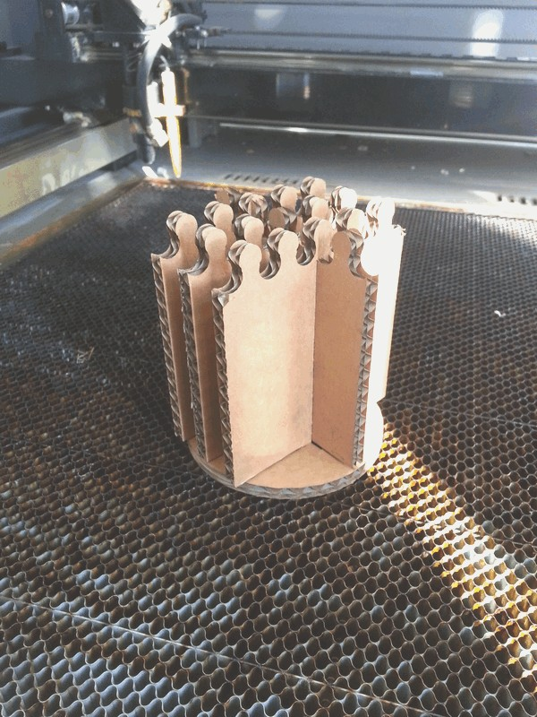

David Montenegro
FAB ACADEMY 2015
Final Project | Assignments | Download | About | Contact
02_11 Computer-controlled Cutting
On wednesday 02.11.2015 we’ve got the third online lesson with Neil Gershenfeld.
The next lessons can be found on the Fab Academy account on Vimeo.
All the documentation can be found here
For this week the assignment was
** design, make, and document a press-fit construction kit **
Set up
In this week I’ve tried to use two different tools: vinilcutter and lasercutter.
Vinyls
Fiore, my local instructor, one time said me “you’re a LAZY BASTARD”, and so I decided to design and make some sticker to put on my laptop and on my chair.
Press kit
For the press kit I make some “spaceship” (well, it won’t look as you can imagine a spaceship), and helping a mate I made also another presskit.

Leather
I made the wristband for a watch using just flexibility, hinges and joints with the leather.
What I’ve done
Vinyls
First I designed the vinyl in InkScape

I used Canter, a contemporary free font designed by Christopher J. Lee.
Than I saved it in png and using FabModules I made the path to cut with a Roland Camm-1.
Here the steps to use FabModules:
-
Input format: select the format of the file you want to start from among PNG, SVG, STL, VOL. I’ve used the PNG with a 600dpi resolution.
-
Output format: select the machine you’re going to use and relative format file among SVG, Epilog, Trotec, Oxford, Roland GX-24, Roland MDX-20, ShopBot or G-code. I selected “cut vinyls”.
-
Process: select what you’re going to cut.
-
Now on the right side of the screen I’ve a column with some field and buttons; I just insert 1.1 in the ‘path error(pixel)’ and run the generation of the cutting path pressing ‘calculate’ and than ‘send’ to start cutting.
I made also some stripe to use as background, and graphically speaking it’s a very bad choice.

With the Roland machines you can choose two mode to feed it: edge if you are using a roll of vinyl or piece if you have already cutted your patch. I used Piece.
Once cut the vinyl I peeled the unused plastic having care to not remove some small part and than using the application tape I’ve applied to the support. To avoid to lose some smaller piece it would be better to modify the shape during the design process to join all together; another trick is to smooth slightly all the vertices, so the cut wont have discontinuity and as the cutting as well as the peeling will be far more easy and quick.
DOWNLOAD
Lazy Bastard
Lasercut
I’ve used lasercutter in the past, but every machine is different from each other, so I started testing the tool.
I started making some press-fit joint with some slight width difference to measure how much matter has been lost by the burning.
I made a single 50mm peg and some slot with decremental width (Δ: 0.1). This test was cut on different materials (double-wave cardboard and plywood 3mm) and with different settings (see at the image below).

**CARDBOARD**
speed 100
power 100
passes 1
speed 100
power 20
passes 1
speed 20
power 1
passes 1
**PLYWOOD**
speed 100
power 80
passes 1
speed 100
power 60
passes 1
speed 100
power 40
passes 1
speed 100
power 20
passes 2
It seems that the laser burns 0.25mm on cardboard and 0.20mm on plywood.
A 50mm (drawn, not measured) plywood peg fits well tight in a 49.6mm (drawn, not measured) slot.
These are useful informations for (all) the next step to produce a “strange spaceship”.
Design
Refer to the previous assignment for the design part.
Cutting cardboard
I’ve cut the model using a double wave 7mm cardboard on a FullSpectrum 90W so with the Grasshopper definition I produced the following files

Make this construction kit is very easy:
start with the round part (signed with a C in picture) and the piece number 1 (see the picture) and snap them together across the crosses plugging the tooth inside the central cross; the other two crosses have to remain totally uncovered.

Now pic the piece number 4 (with 3 slots) and embed its middle slot wuth the sentral slot of piece number 1; at the end of its slide it has ti fit also with the circular base.

Now pic the piece number 2 and fit on the the piece number 4 and on the circular base; do the same with the piece number 3.
Note that these two pieces ends over tiny circular holes, and it’s not a fortuity: if equipped with electrical parts this components may be used as upgrades for the spaceship and the system can read it through the contacts. NOTE: Because the final project has changed this feature has no more been implemented.
A typical feature of cardboard is that it works like a spring because of its hollow structure and paper waves. It has been cutted a little bit tight (kerf 0.1mm instead of 0.2) so it fits tight.
Cutting leather
I made also some piece in leather for my final project.
Cutting leather with a lasercutter produces a disgusting stink even with a good exhaust pump, but it’s not a good reason to stop.
I made a wrist band in two pieces; it has to be folded and its hinges doesn’t use any sawing line or glue.
A crucial part is the bending radius, so you have to consider the thickness of the leather as well as you do with plywood or other materials.
Bending and joining together two strips in a narrow space avoid that it unlace.
For the cut remember to use some circle at the end of the segments to let it widen a little more.
To cut them out of a 1.8mm piece of leather I used a 90W laser with the following settings: speed 100, power 40, passes 1
and it has came out nice, with no burns on the edges (just on the sides).

This kit is made of just one piece, like an origami.
First bend the upper part of the “T” (the direction of this bend decides what the inside and what the outside, but it works well anyway).
Than slip a stripe trough the closer vertical slot and push also the two side pads through it; do the same with the other stripe and, with some patience, lock them together using the remaining slots. At the end the stripes will make a little hollow just inside the main bend (about 3mm) that can be used to join to the case of the watch while the “knot” is hidden and no glue or sawing line has been used.

There is another fit, much easier, that allow to close and customize the length of the wrist band. It works like a spear: it goes in but doesn’t came out because of its shape; it’s quite intuitive and I think that it doesn’t need more explanation.
Note how it changes in just two versions: length, shape, inner radius, etc. Note also the mark: at first attempt it was made by outlines, but they was so close that the leather has bun twice and so the result was rough. To avoid this I edited the mark to reproduce also in very small dimension with a lasercutter: now it has just one central line, and as you can see in pictures it’s enough to obtain a fine result.
Download
Lazy Bastard
PressFit
wristband2